Prática 2.6 — Adsorção de Ácido Acético por um Sólido · Isotermas de Langmuir e Freundlich
O ácido que desaparece da solução
0:00 · 92s · 8 ações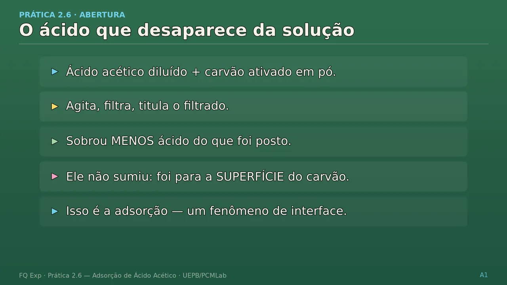
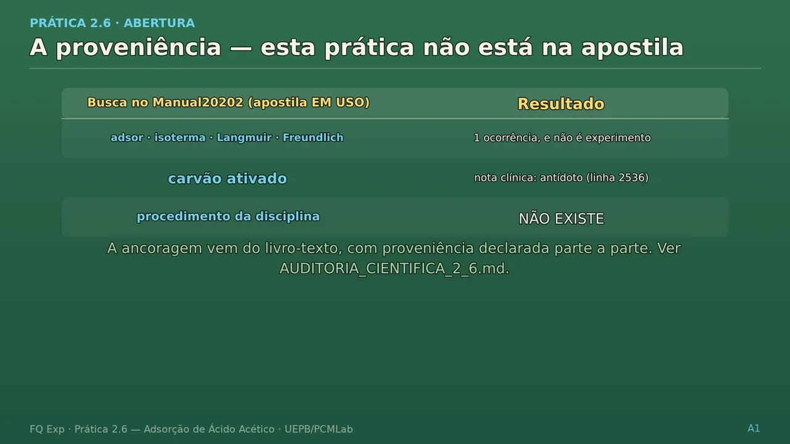
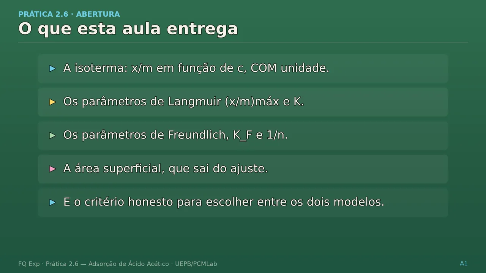
Um copo de água com um pouco de carvão em pó. Você pinga ácido acético, agita, filtra e titula o que sobrou. Sobrou menos ácido do que você pôs. Ele não desapareceu: foi para a superfície do carvão. Este é o fenômeno desta aula: a adsorção.
Aviso de proveniência. A apostila em uso da disciplina não traz esta prática: a busca por adsorção, isoterma, Langmuir e Freundlich devolve uma única nota sobre carvão ativado como antídoto, e não um experimento. O procedimento vem do livro-texto, com proveniência declarada na auditoria.
A aula entrega a isoterma de adsorção do ácido acético em carvão ativado, os parâmetros de Langmuir e de Freundlich, a área superficial que sai do ajuste e, principalmente, o critério honesto para decidir qual dos dois modelos os seus dados realmente sustentam.
▸ MONITOR(A) DO PCM LAB: Professor, se a apostila não traz essa prática, de onde saiu o procedimento? Preciso citar a fonte no relatório?
Adsorção não é absorção
1:32 · 159s · 10 ações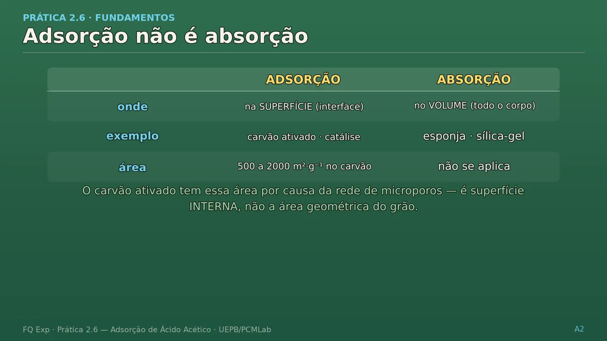
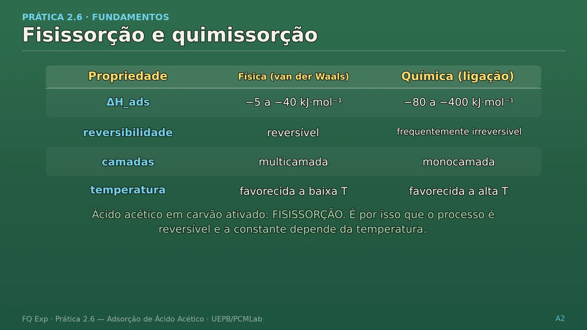
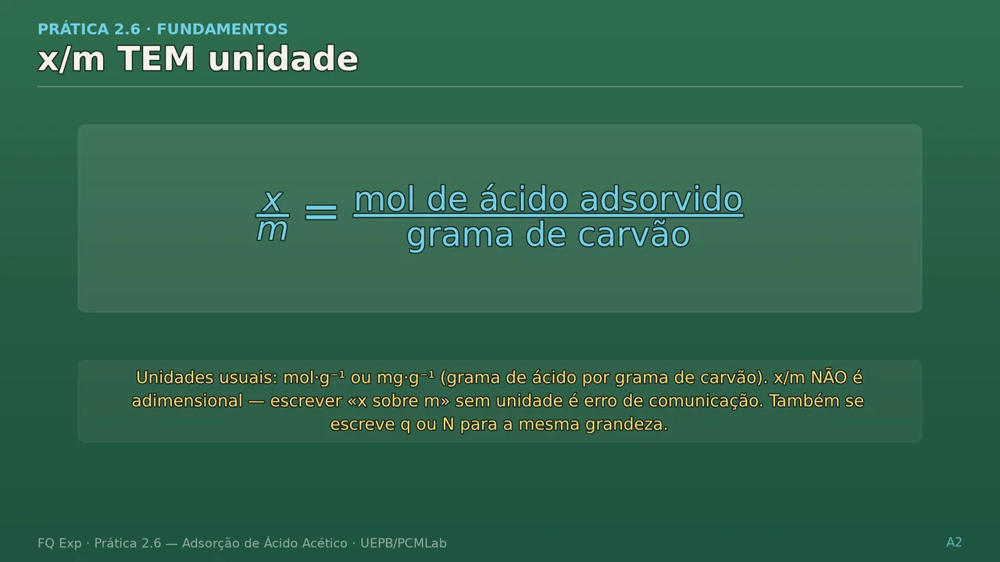
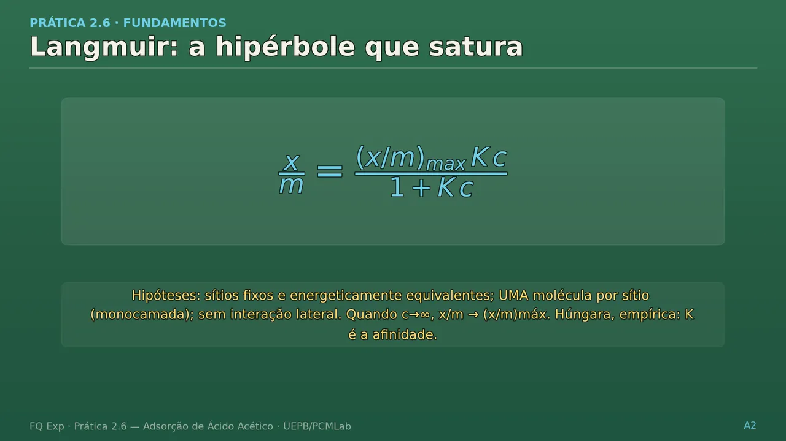
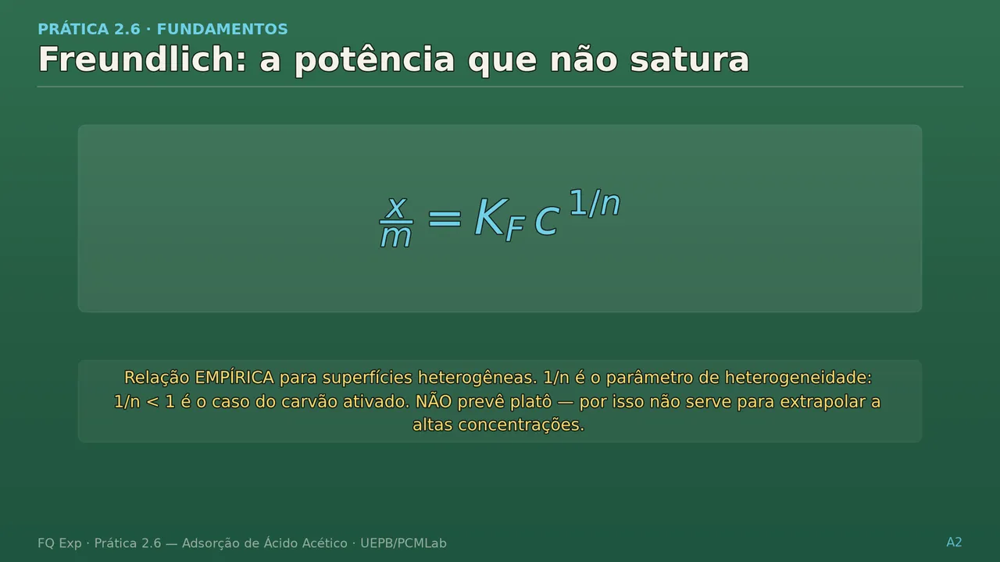
Adsorção é o acúmulo de uma espécie na superfície de outra fase, numa interface. Não confunda com absorção, que é de volume: a esponja absorve água, o carvão adsorve na sua superfície interna, que é enorme, de quinhentos a dois mil metros quadrados por grama.
Há dois tipos. Na fisissorção as forças são de van der Waals, a entalpia fica entre menos cinco e menos quarenta quilojoules por mol, e o processo é reversível. Na quimissorção há ligações químicas, a entalpia passa de oitenta, e é irreversível. O nosso caso é fisissorção.
A grandeza que medimos é x dividido por m: quanto de ácido saiu da solução por grama de carvão. Isso TEM unidade — grama de ácido por grama de carvão, ou mol por grama. Nunca escreva só x sobre m, sem unidade: escreva x sobre m e ponha a unidade ao lado.
O modelo de Langmuir, de mil novecentos e dezoito, supõe sítios fixos e equivalentes, uma molécula por sítio, sem interação entre vizinhos. Sai a equação: x sobre m igual a x sobre m máximo, vezes K, vezes c, dividido por um mais K c. Quando c cresce muito, x sobre m satura no valor máximo.
O modelo de Freundlich é empírico e descreve superfícies heterogêneas: x sobre m igual a K F, vezes c elevado a um sobre n. Ao contrário de Langmuir, ele não prevê platô. O expoente um sobre n mede a heterogeneidade, e menor que um é o que se observa em carvão ativado.
O sistema: ácido acético + carvão ativado
4:11 · 148s · 12 ações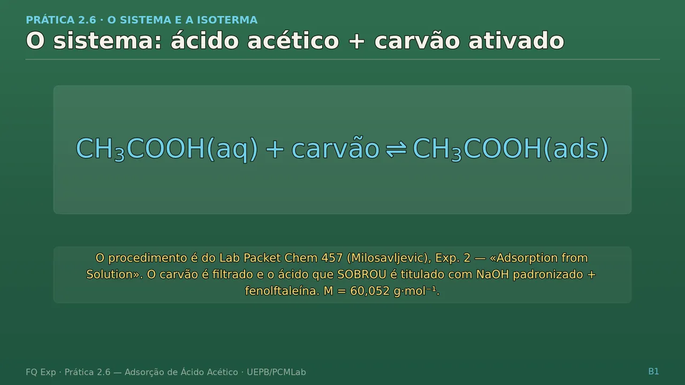
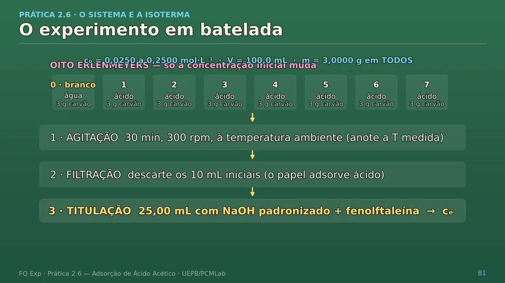
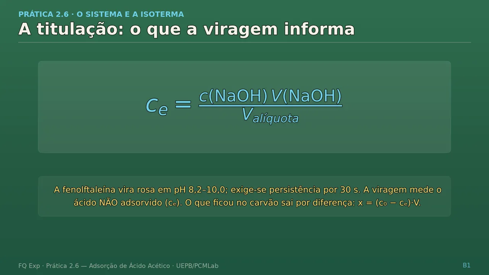
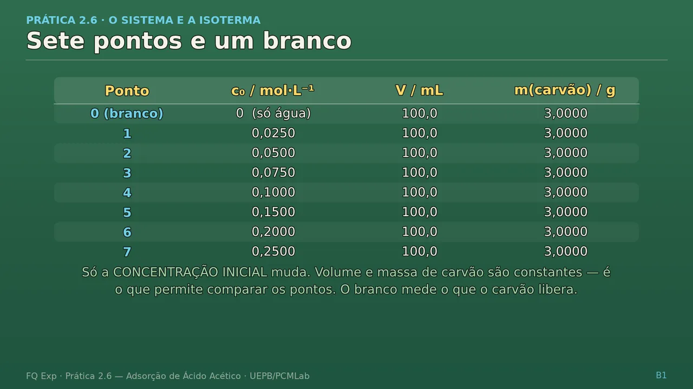
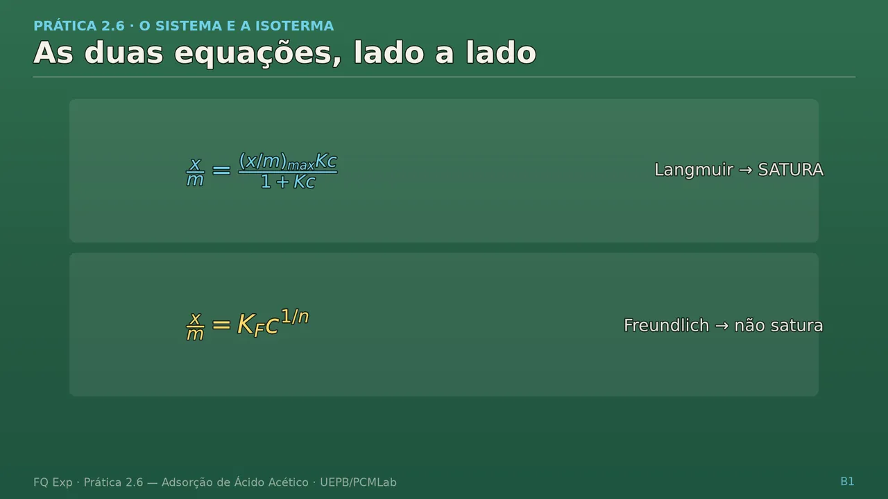
O sistema escolhido é o mais clássico da ementa: ácido acético diluído em água, em contato com carvão ativado em pó. Depois do equilíbrio, o carvão é filtrado e o ácido que sobrou na solução é titulado com hidróxido de sódio padronizado, usando fenolftaleína.
O experimento é em batelada: oito erlenmeyers, cada um com três gramas de carvão e cem mililitros de uma solução de ácido de concentração diferente. O número zero é o branco: recebe só água, sem ácido, para medir o que o próprio carvão libera na solução.
A viragem da fenolftaleína marca o ponto final, com a coloração rosa persistindo por trinta segundos. O que ela informa é a concentração de ácido que NÃO foi adsorvida, a concentração de equilíbrio. O que ficou no carvão sai por diferença: c zero menos c de equilíbrio.
A série tem sete concentrações iniciais: vinte e cinco, cinquenta, setenta e cinco, cem, cento e cinquenta, duzentos e duzentos e cinquenta milésimos de mol por litro. O branco fica em zero. As massas de carvão e os volumes são iguais em todos — só a concentração inicial muda.
▸ MONITOR(A) DO PCM LAB: Espera. Se eu escrever só x sobre m, sem unidade, está errado? Parece tão pequeno esse detalhe.
Guarde as duas equações lado a lado. Langmuir é uma hipérbole que satura; Freundlich é uma potência que desacelera. Na forma direta as duas parecem parecidas dentro de uma janela estreita. Por isso, escolher entre elas não é trivial.
Material e reagentes
6:39 · 68s · 4 ações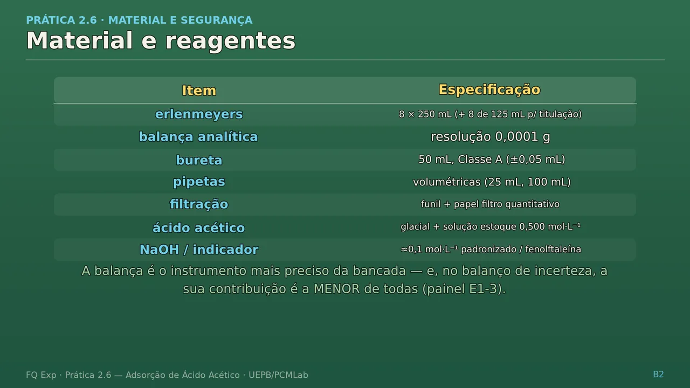
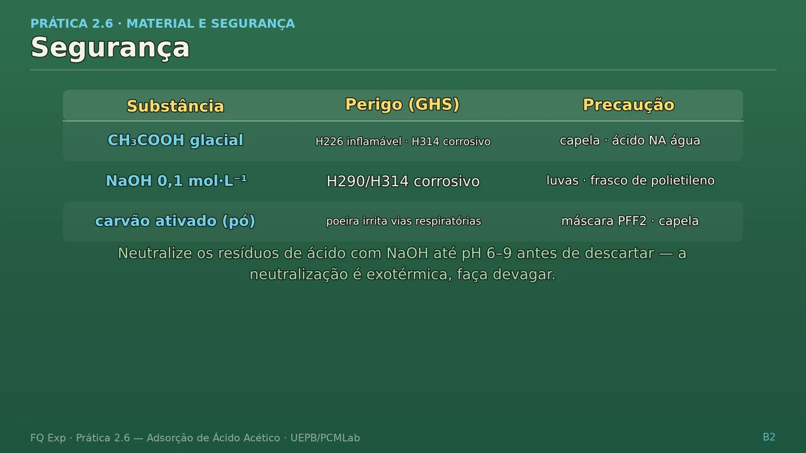
Material: oito erlenmeyers de duzentos e cinquenta mililitros, balança analítica de décimo de miligrama, bureta de cinquenta mililitros classe A, pipetas volumétricas, funil com papel filtro quantitativo, agitador e termômetro. Reagentes: ácido acético, hidróxido de sódio e fenolftaleína.
Segurança. O ácido acético glacial é corrosivo e inflamável: prepare as diluições na capela e sempre adicione o ácido à água, nunca o contrário. O hidróxido de sódio ataca o vidro: guarde em polietileno e padronize no dia. A poeira de carvão irrita as vias respiratórias.
Preparo das soluções
7:47 · 131s · 10 ações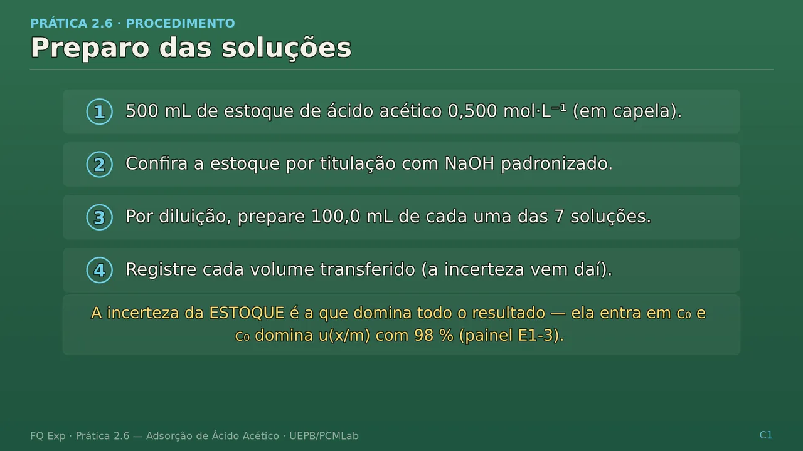
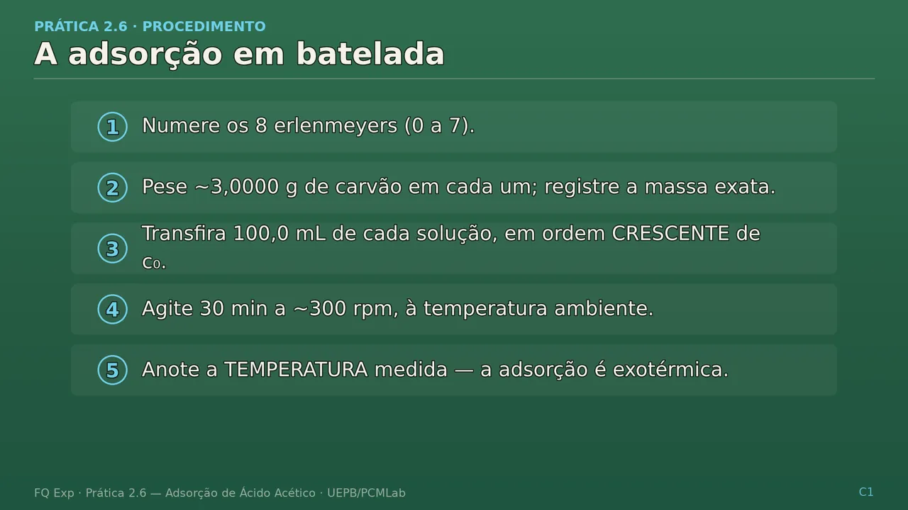
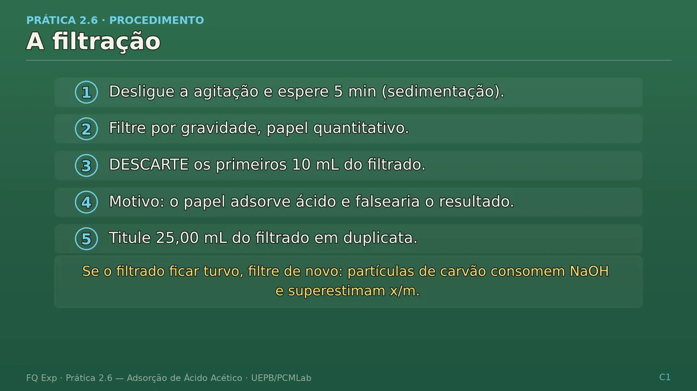
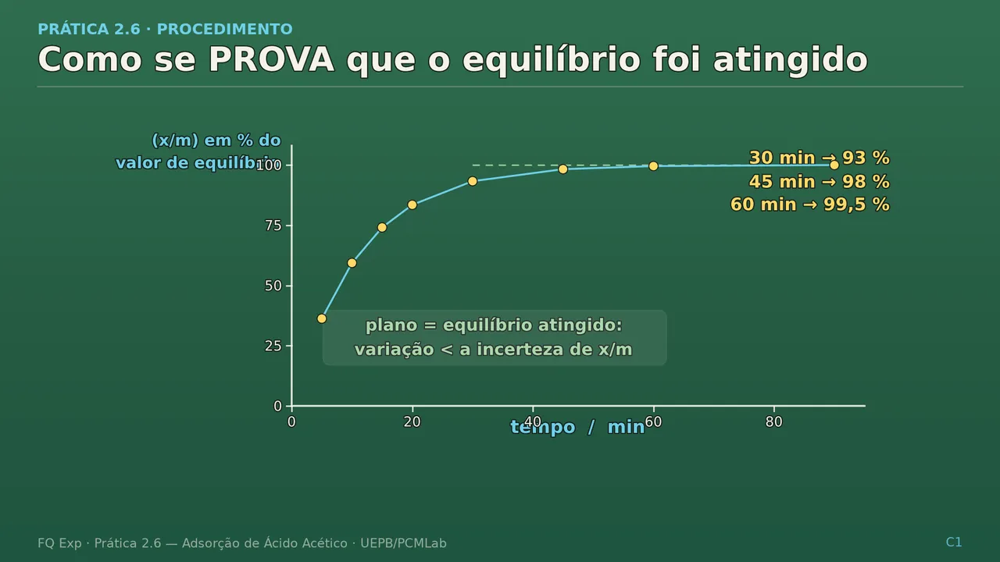
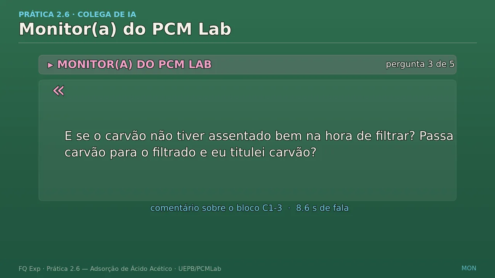
Procedimento, parte um. Prepare quinhentos mililitros de solução estoque de ácido acético meio molar, em balão volumétrico, e confira a concentração por titulação. Dessa estoque, por diluição, prepare os cem mililitros de cada uma das sete soluções da série. Registre cada volume transferido.
Parte dois. Numere os oito erlenmeyers. Pese cerca de três gramas de carvão em cada um, registrando a massa exata. Transfira cem mililitros de cada solução, na ordem crescente de concentração. Agite por trinta minutos, à temperatura ambiente, e anote a temperatura medida.
Parte três. Desligue a agitação e espere cinco minutos, para o carvão sedimentar. Filtre por gravidade com papel quantitativo e DESCARTE os primeiros dez mililitros do filtrado: eles apenas lavam o papel e saturariam os sítios dele. Colete o restante e titule em duplicata.
E o tempo de trinta minutos: como saber que basta? Faça um controle separado. Num único frasco, retire alíquotas em cinco, dez, quinze, vinte, trinta, quarenta e cinco e sessenta minutos, e titule. Trace x sobre m contra o tempo: só aceite o valor quando a curva ficar plana.
▸ MONITOR(A) DO PCM LAB: E se o carvão não tiver assentado bem na hora de filtrar? Passa carvão para o filtrado e eu titulei carvão?
A planilha de dados (exemplo ilustrativo, 25,0 °C)
9:58 · 187s · 12 ações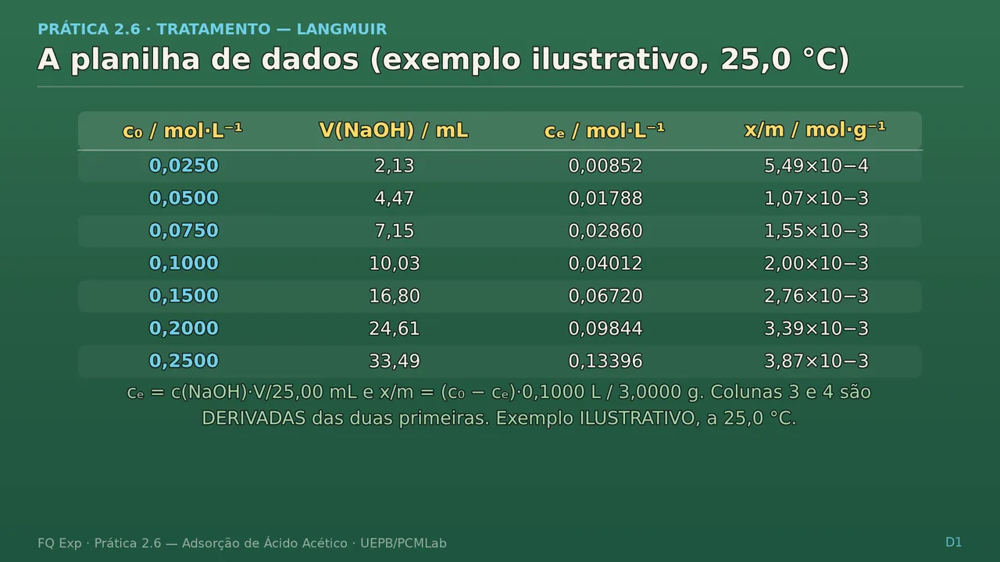
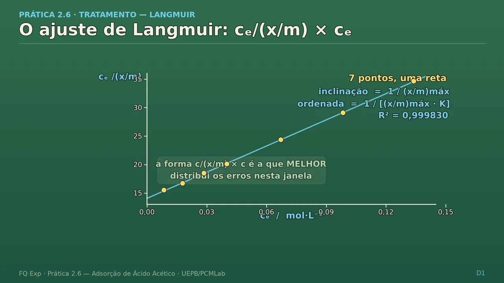
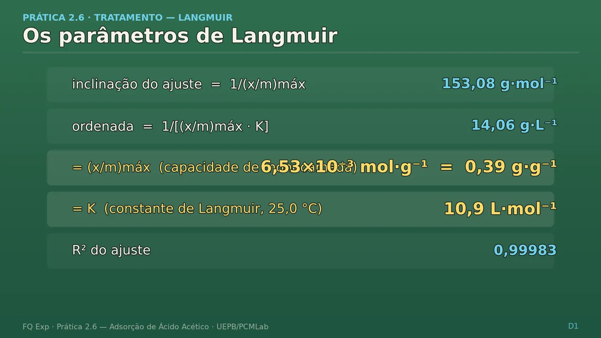
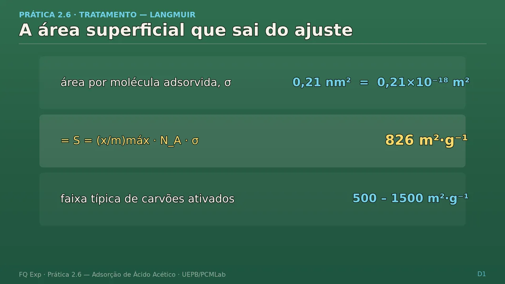
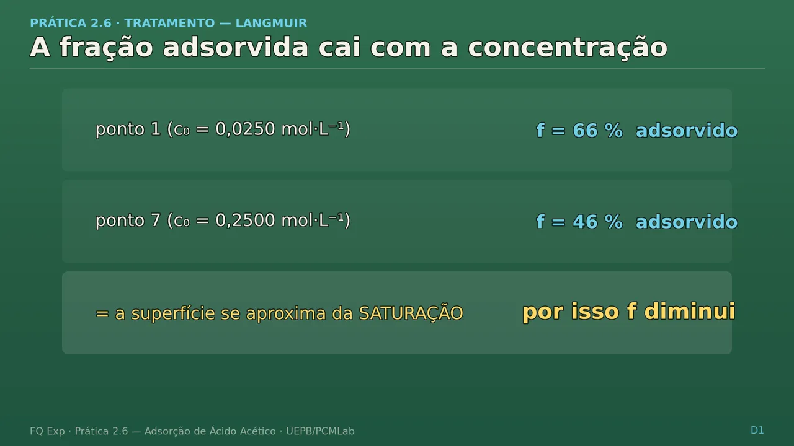
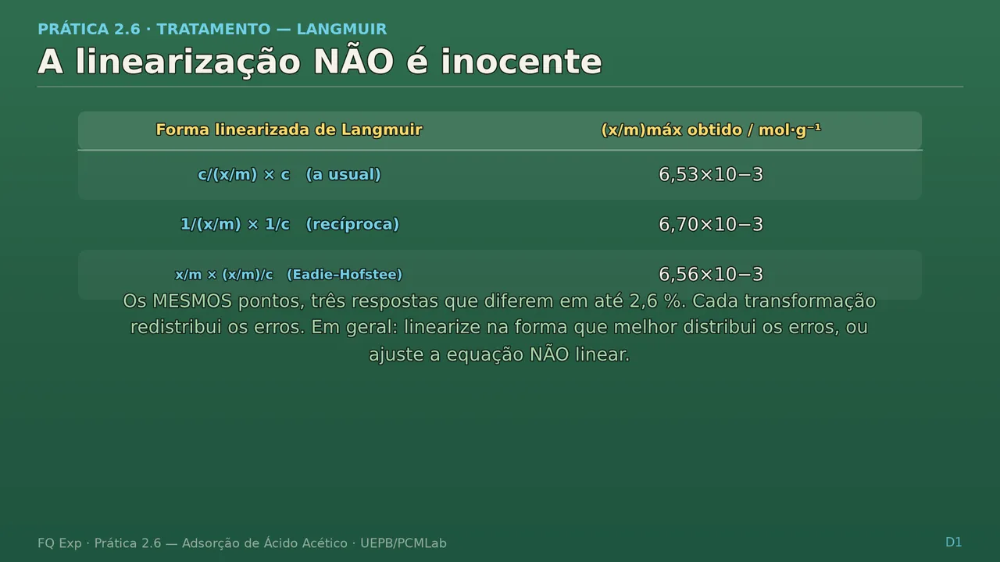
A planilha ilustrativa, a vinte e cinco graus. As concentrações de equilíbrio medidas foram oito vírgula cinco, dezoito, vinte e nove, quarenta, sessenta e sete, noventa e oito e cento e trinta e quatro milésimos de mol por litro. O hidróxido gasto foi de dois vírgula um a trinta e três vírgula cinco mililitros.
O primeiro ajuste é Langmuir, na forma linearizada: c dividido por x sobre m, em função de c. O gráfico tem de ser reta. A inclinação vale um sobre o máximo; a ordenada na origem vale um sobre o máximo, vezes K. Dos dois coeficientes, isolam-se os dois parâmetros.
O ajuste dá inclinação de cento e cinquenta e três gramas por mol e ordenada de catorze gramas por litro. Invertendo, o máximo sai em seis vírgula cinco vezes dez elevado a menos três mol por grama, e K em dez vírgula nove litros por mol. O R dois é zero vírgula nove nove nove oito.
A área superficial sai de graça. Se cada molécula adsorvida ocupa cerca de vinte e um centésimos de nanômetro quadrado, a área é o máximo, vezes o número de Avogadro, vezes essa área molecular. Dá oitocentos e vinte e seis metros quadrados por grama.
A fração adsorvida é a razão entre o que saiu da solução e o que havia no início. Ela cai de sessenta e seis por cento, no ponto mais diluído, para quarenta e seis por cento no mais concentrado. É o esperado: nos pontos diluídos sobram sítios, e a superfície adsorve quase tudo.
Cuidado com a linearização. Ajustando os mesmos pontos em três formas de Langmuir, a capacidade de monocamada sai diferente: seis vírgula cinco três na forma c sobre q contra c, seis vírgula setenta na recíproca e seis vírgula cinquenta e seis na de Eadie-Hofstee. A transformação mexe nos erros.
O ajuste de Freundlich: log(x/m) × log cₑ
13:05 · 124s · 10 ações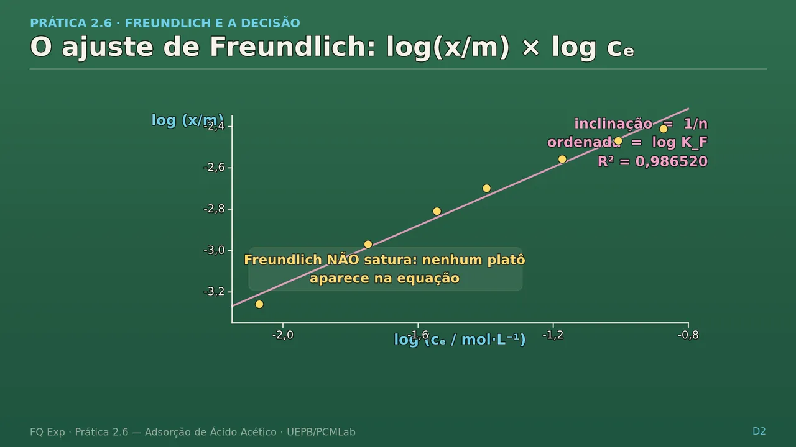
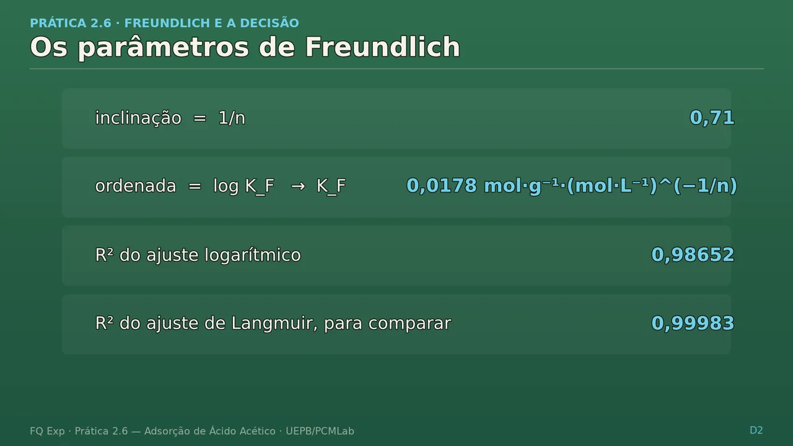
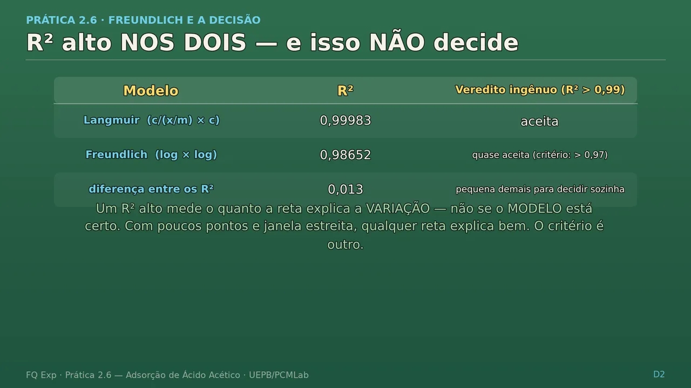
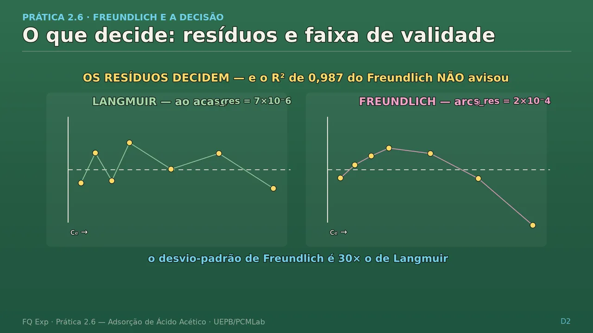
Agora Freundlich. Tomando o logaritmo dos dois lados: log de x sobre m igual a log de K F, mais um sobre n, vezes log de c. O gráfico de log q contra log de c é uma reta, com inclinação igual a um sobre n e ordenada na origem igual a log de K F.
O ajuste dá um sobre n igual a zero vírgula setenta e um, e K F igual a zero vírgula zero dezoito. O R dois da reta logarítmica é zero vírgula nove oito sete — contra zero vírgula nove nove nove oito em Langmuir.
Aqui está o ponto crítico desta aula. Com R dois tão altos nos dois modelos, o coeficiente de determinação NÃO decide. Um critério ingênuo, que aceita todo ajuste acima de zero vírgula noventa e nove, aceitaria os dois. E um R dois alto não é evidência de que o modelo esteja certo.
O que decide é o padrão dos resíduos e a faixa medida. Os resíduos de Langmuir se distribuem ao acaso e são trinta vezes menores. E se você ajustar só os quatro pontos mais diluídos, as duas retas ficam quase perfeitas — e o máximo sai três vírgula sete por cento errado.
▸ MONITOR(A) DO PCM LAB: Então os dois R dois são altos e não servem para escolher? Como é que eu justifico a escolha no relatório, então?
O equilíbrio, quantificado
15:09 · 126s · 10 ações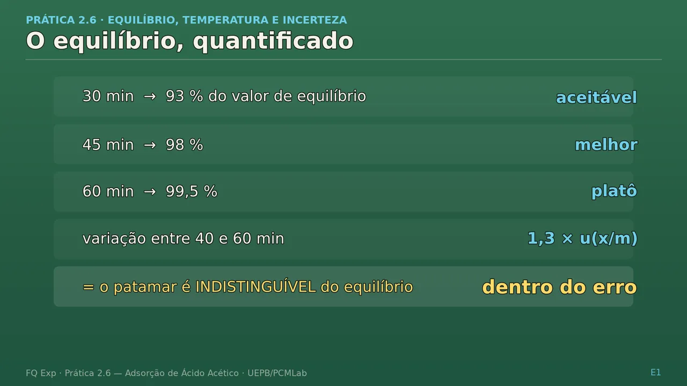
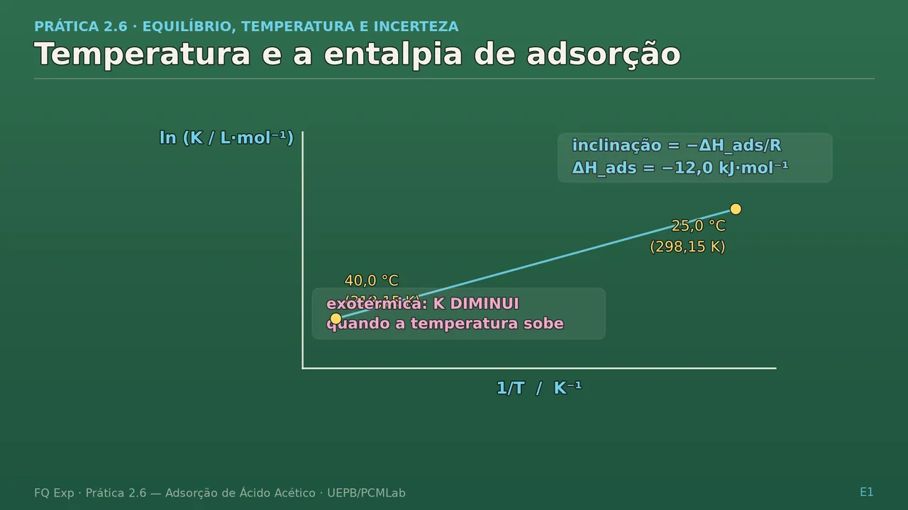
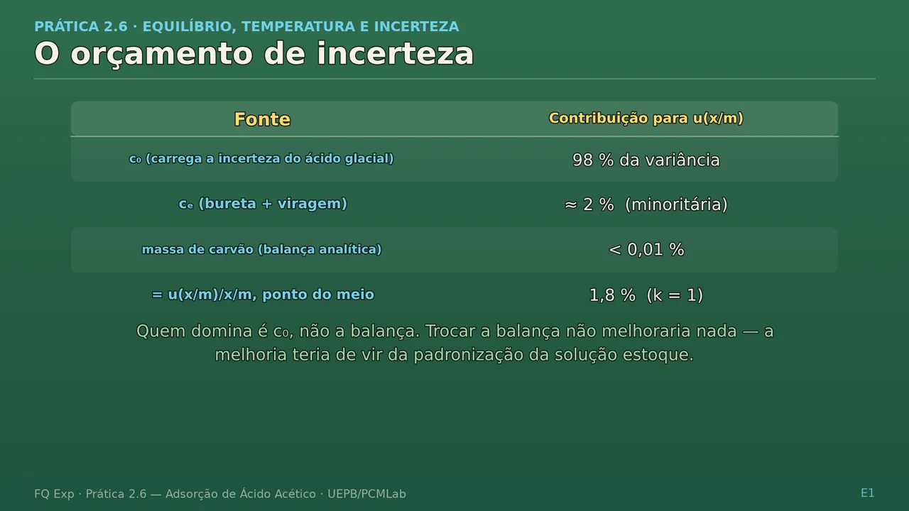
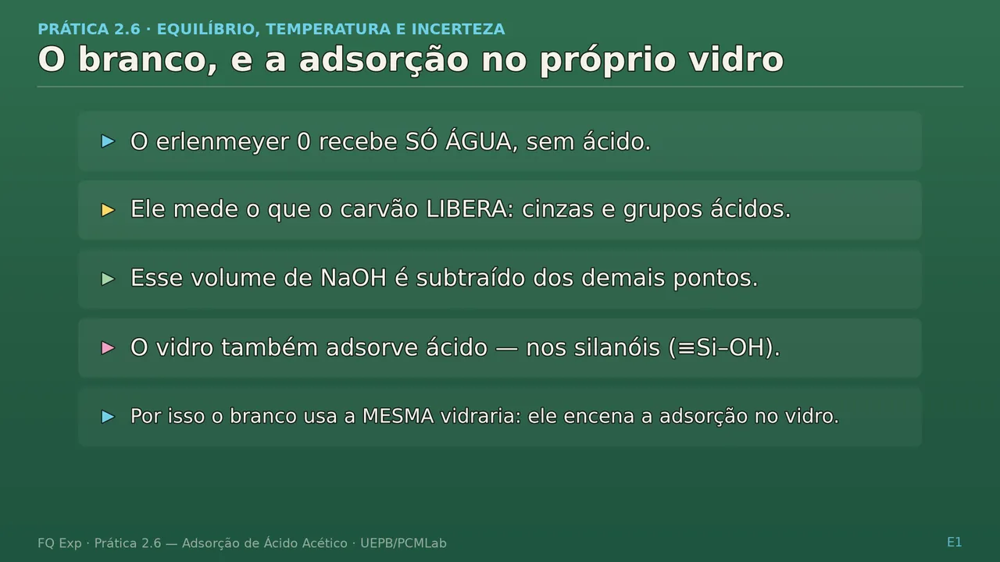
O controle de equilíbrio, com números. Aos trinta minutos a adsorção já está em noventa e três por cento do patamar; aos quarenta e cinco, em noventa e oito. A variação entre quarenta e sessenta minutos vale só uma vírgula três vez a incerteza de x sobre m. Meia hora basta, se você provar isso.
E a temperatura, sempre declarada. A adsorção é exotérmica, então a constante de Langmuir diminui quando você esquenta. Medindo K a vinte e cinco e a quarenta graus, a equação de van't Hoff dá entalpia de adsorção de menos doze quilojoules por mol — dentro da faixa da fisissorção.
O orçamento de incerteza. No ponto do meio, a incerteza relativa de x sobre m é de um vírgula oito por cento. Quase tudo vem da concentração inicial, que carrega a incerteza do ácido glacial: noventa e oito por cento. A balança analítica contribui com menos de um centésimo de por cento.
▸ MONITOR(A) DO PCM LAB: Professor, se a adsorção é exotérmica, guardar o frasco na geladeira aumenta a quantidade adsorvida?
O branco e o vidro. O erlenmeyer zero, sem ácido, mede o que o carvão libera — cinzas e grupos ácidos de superfície — e esse volume é subtraído dos demais. O vidro também adsorve ácido, nos silanóis: por isso o branco usa a mesma vidraria, e é ele que denuncia essa adsorção.
Recapitulando a Prática 2.6
17:16 · 120s · 9 ações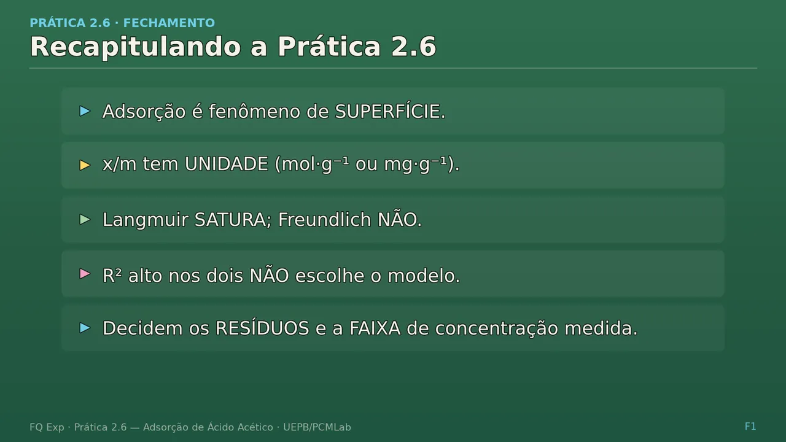
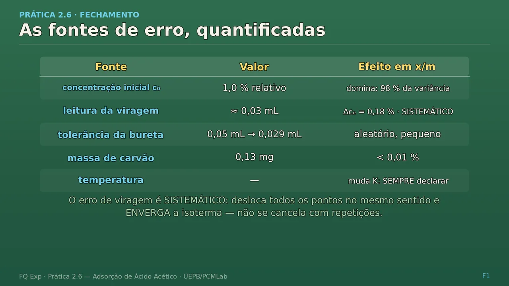
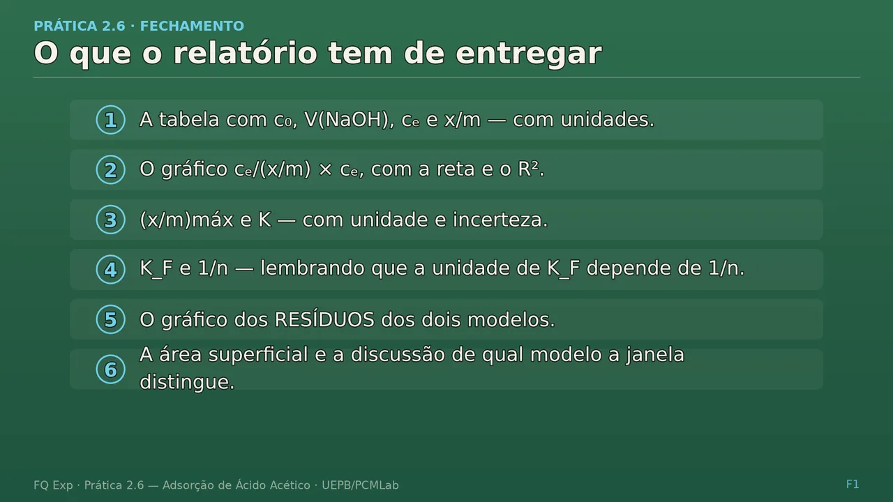
Recapitulando. A adsorção é um fenômeno de superfície, e x sobre m tem unidade. Langmuir satura; Freundlich não. A linearização é conveniente, mas distorce os erros. E R dois alto nos dois modelos não decide nada: decide o padrão dos resíduos e a faixa que a sua janela alcança.
Pause e responda. Um: por que a quantidade adsorvida precisa de unidade? Dois: qual gráfico você constrói para Langmuir? Três: por que R dois alto não escolhe o modelo? Quatro: como você prova que o equilíbrio foi atingido? Cinco: o que o branco corrige?
PAUSE E PENSE Pause o vídeo e responda antes de continuar.
As fontes de erro, quantificadas. A concentração inicial domina, com noventa e oito por cento da variância, pela incerteza do ácido glacial. A leitura da viragem desloca a concentração de equilíbrio em dezoito centésimos de por cento, e é sistemática. A massa de carvão pesa menos de um centésimo.
O relatório entrega: a tabela com as concentrações inicial e de equilíbrio; o gráfico de c sobre q contra c, com a reta e o R dois; os parâmetros de Langmuir e de Freundlich, com unidade e incerteza; o gráfico dos resíduos; a área superficial; e a discussão de qual modelo a janela permite distinguir.